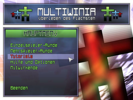
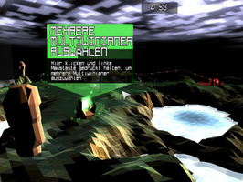
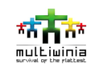

Multiwinia
Dieser Artikel wurde für die folgenden Ubuntu-Versionen getestet:
Ubuntu 14.04 Trusty Tahr
Zum Verständnis dieses Artikels sind folgende Seiten hilfreich:
Multiwinia - Überleben des Flachsten  ist die Fortsetzung des preisgekrönten Darwinia aus dem Hause Introversion Software. Das Echtzeit-Strategie-Spiel verwendet die gleiche Spiele-Engine wie sein Vorgänger - bringt aber einen Mehrspieler-Modus mit.
ist die Fortsetzung des preisgekrönten Darwinia aus dem Hause Introversion Software. Das Echtzeit-Strategie-Spiel verwendet die gleiche Spiele-Engine wie sein Vorgänger - bringt aber einen Mehrspieler-Modus mit.
In sechs verschiedenen Spielmodi schickt man seine Armee aus Darwinians in die Schlacht um einen Computervirus zu eliminieren. Dieser hat die von Dr. Sepulveda geschaffene digitale Welt infiziert und die Darwinians in bösartige Kreaturen verwandelt. Power-Ups, welche als Kisten von Himmel fallen, enthalten zufällige Extras und können entscheidende Vorteile für die Schlacht bringen.
Die Titel Uplink und Defcon von Introversion Software sind ebenfalls im Wiki zu finden.
|  |  |
| Hauptmenü | Tutorial |
Installation¶
The Humble Introversion Bundle¶
Das Spiel aus der Aktion The Humble Introversion Bundle als .deb-Paket herunterladen und installieren [1]. Nach erfolgreicher Installation ist das Spiel über "Spiele -> Multiwinia" zu finden.
Nach dem ersten Start wird der AUTH Key (Multiwinia multiplayer key) abgefragt, welcher auf der persönlichen Seite des Humble Bundles zu finden ist. Dieser ähnelt dem folgenden Beispiel:
UBUNTU-USERSR-ULESUB-UNTUUS-ERS
Der Schlüssel wird im Homeverzeichnis im versteckten Ordner ~/.multiwinia in der Datei authkey hinterlegt. Unter ~/.multiwinia/preferences.txt werden die Einstellungen gespeichert.
Ubuntu Software-Center¶
Multiwinia kann über das Software-Center käuflich erworben werden. Dazu ist eine Registrierung bzw. ein Zugang über Ubuntu One erforderlich, welchen man sich aber auch während des Zahlungsprozesses über das Software-Center anlegen kann. Anschließend wird das Spiel automatisch heruntergeladen und installiert. Der Registrierungscode wird per Email gesendet. Für zukünftige Updates wird eine neue Paketquelle hinzugefügt.
Konfiguration¶
Spielsprache¶
Über "Help and Options -> Settings -> Other Options -> Language" kann die Spielsprache umgestellt werden. Über "Apply" werden die Änderungen übernommen.
Bedienung¶
Die Steuerung erfolgt mit der Maus und der Tastatur.
| Menü | |
| Menüpunkt | Beschreibung |
| "Single Player Game" | Einzelspieler-Runde |
| "Multiplayer Game" | Mehrspieler-Runde. Hier kann man ein Spiel austragen oder an einem bestehenden Spiel teilnehmen. |
| "Tutorials" | Spieleinführung. |
| "Help and Options" | Spielrelevante Grundeinstellungen vornehmen u.a. Auflösung und Detailgrad. |
Tastenkürzel¶
| Steuerung | |
| Taste(n) | Beschreibung |
| W + A + S + D | Kamera/Blickwinkel |
Z /  | Zoom |
 | Einheit auswählen / Aktionen |
| Alt + ⏎ | Volllbild- / Fenstermodus |

Infobox¶
| Multiwinia - Überleben des Flachsten | |
| Originaltitel: | multiwinia - survival of the flattest |
| Genre: | Strategie |
| Sprache: |    |
| Veröffentlichung: | 2008 |
| Publisher: | Introversion Software |
| Systemvoraussetzungen: | 2GHz-Prozessor / 500MB RAM / 64 MB Festplattenspeicher |
| Medien: | Download |
| Strichcode / EAN / GTIN: | - |
| Läuft mit: | nativ |


- Erstellt mit Inyoka
-
 2004 – 2017 ubuntuusers.de • Einige Rechte vorbehalten
2004 – 2017 ubuntuusers.de • Einige Rechte vorbehalten
Lizenz • Kontakt • Datenschutz • Impressum • Serverstatus -
Serverhousing gespendet von